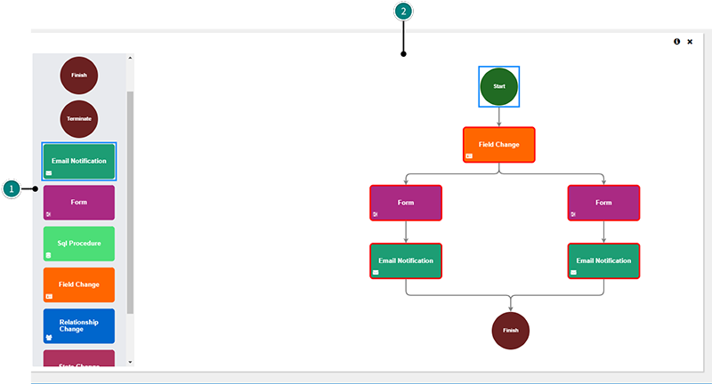

By establishing a workflow in Infogix Data3Sixty, you are able to specify the process that end users will follow when they want to add, change or edit an artifact.
You can include conditions in the workflow so that, for example, when a change is entered, an administrator is notified, and has the opportunity to approve or reject the change.
Tip: This topic describes how an Administrator can establish a new workflow. For an overview on following workflows once they are set up, see Following workflows.
The following steps illustrate how to set up a new workflow. In this example, the workflow is being created to manage artifact changes:
| Change type | Definition |
|---|---|
| Item Added | Notifies an administrator or designated user when a user has added a new element of a specified value. |
| Item Changed | Notifies an administrator or designated user when a user has changed any element within the specified object type. |
| Item Removed | Notifies an administrator or designated user when a user has deleted an existing entry. |
| Schedule | Notifies an administrator or designated user of any changes that occurred over a specified time period. |
| Score Changed | Reserved for a future release of Infogix Data3Sixty. |
| Rule Result | Reserved for a future release of Infogix Data3Sixty. |
| Loaded | Notifies an administrator or designated user when data that is loaded via fusion differs from current data in the system, see Fusion. |
| Request Certification | Reserved for a future release of Infogix Data3Sixty. |
You can then start building your workflow by dragging the Start and Finish elements (1) from the left of the screen into the flowchart editing area (2):

If you need to go back and delete a connection, select the connection that you want to remove, then press the Delete key.
By default, your flowchart must include a Start Element, a Finish Element, and at least one additional element that occurs between the start and finish. You can select from the following elements when creating your flowchart:
| Flowchart element | Description |
|---|---|
| Start | Marks the entry into the workflow. |
| Finish | Marks the successful completion of the workflow. |
| Terminate | Marks the unsuccessful completion of the workflow. |
| Email Notification | Sends an email notification to a specific role, person, or group. |
| Status Change | Changes the status of an artifact. For example the status might be switched from Draft to Under Review. |
| Form | Provides a custom form that is inserted into the workflow. |
| SQL Procedure | Reserved for use by Infogix Data3Sixty Implementation Specialists. The Infogix Data3Sixty team will write a custom procedure to handle complex functionality. |
Note: Ensure that you do not delete field types that are associated with active workflow instances.